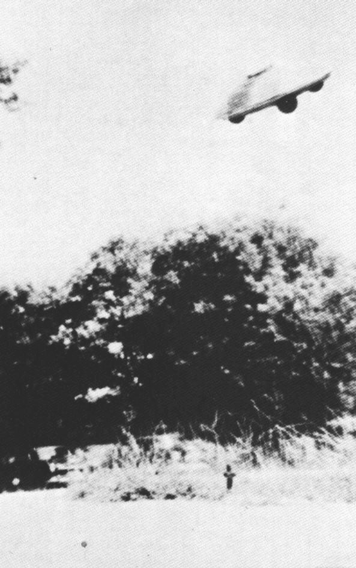

Couverture de Amazing
Stories ce mois-ci, titrant sur un article de Ray Palmer prétendant que le
gouvernement cache des faits sur les soucoupes. Egalement "Les soucoupes de l'espace - un mythe !" et "Les
extraterrestres sont parmi nous !" par Gray Roscoe Barker. Egalement
Richard Sharpe Shaver.
A Shippingport (Pennsylvanie), 2 hommes voient
approcher depuis la direction de la ville voisine de Ohioville à une altitude estimée
à 2000pieds une sorte de grosse torpille lumineuse qu'ils estiment faire
200pieds de long. La moitié supérieure est couleur verte et la moitié inférieure rouge-orangée. Les témoin disent
penser que le phénomène a fait demi-tour au-dessus de l'installation nucléaire, ce qui est pris au sérieux par
l'USAF et le FBIThe Beaver County Times de Beaver (Pennsylvanie), 8 novembre 1957.
La menace nucléaire globale augmentant, le SAC commence
des opérations d'alerte au sol, maintenant près de 1/3 de
ses appareils armés en alerte au sol, avec leurs équipages près à un décollage immédiat.
Spoutnik 1, le 1er
satellite artificiel, est mis en orbite par la
Semiorka, une fusée Soyouz de l'Union Soviétique. Ses "bip bip" sont captés par les opérateurs
radio à travers le monde.
Près de Cap Canaveral (Floride), observation d'un phénomène
ovale blanc pendant 2 nuit consecutives UFO Evidence, NICAP, XII.
A Seattle (Washington), 2 sergents de
l'U.S. Army voient 2 objets blanc plats et ronds voler en file indienne selon une
trajectoire irrégulière, virant fréquemment, durant
Cas Blue Book n° 5003 non résolu < Berliner, D..
Dans la province de Bua (îles Fiji), des indigènes dans un petit bateau voient un
phénomène descendre verticalement et stationner à 20 pieds environ au-dessus de la mer "1957 UFO Sightings Wave Chronology" NICAP.
En plein jour Près de Boston (Massachusetts), un pilote
des Pan American Airways voit un phénomène brillant voler à grande vitesse UFO Evidence, NICAP, V.
Couverture de Fate ce
mois-ci titrant sur la "soucoupe italienne"
Près de Martha's Vineyard (MA), 3 membres de la Woods Hole Oceanographic
Institution, Ronald A. Veeder, le capitaine Scott Bray, et le capitaine Eugene Mysona, ainsi que 2 aviateurs de
Charleston (Caroline du Sud), dont 1 de pilote de jet pour l'USAF, sont à bord du bateau
de Veeder, le Sports Fisherman quand un étrange
phénomène rond orienté vers le sud-est les approche à grande vitesse. Vu par Veeder et les autres aux jumelles,
l'ovni semble être une sphère avec des éléments capteurs ou des pics en ressortant, aux extrêmités rouges. Le
phénomène stationne pendant 2 mn environ avant de décoller vers le sud-ouest à une vitesse plus grande que les
témoins aient jamais vue. L'observation est signalée à la base aérienne de Otis (Massachusetts)
UFO
Investigator / juillet-août 1960, p. 6.
Dans l'état de Minas Gerais (Brésil), à 1500 km à l'intérieur des terres, dans un
coin perdu près de la frontière avec le Paraguay, Antonio
Villas Boas est victime d'un enlèvement dont le moindre détail lui restera en mémoire. L'ovni à une forme
ovoïde, dont la partie supérieure, une coupole transparente, est giratoire, et comprend un marchepied. Un
chercheur brésilien, le docteur Olavo T. Fontès, sera le seul à enregistrer ses
déclarations, qu'il ne rendra pas tout de suite publiques UFO Evidence, NICAP, section XIII.
A Covington (Indiana), un fermier signale un disque argenté stationnant au-dessus
de son combiné alors qu'il travaille dans le champ ; le moteur de son combiné défaille quand l'ovni s'élève
UFO Evidence, NICAP, VIII.
Observation a Tularosa le
16. Nuage lenticulaire ?
En voiture roulant sur l'autoroute 54 au nord de Tularosa (Nouveau Mexique), non loin
de Alamogordo (Nouveau-Mexique) et de la
base de l'USAF de Holloman, Ella Louise Fortune, travaillant
comme infirmière à la réserve indienne de Mescalero près de Trois Rivières
prend une photo (ci-contre) d'un objet stationnaire "UAO Photographed over Holloman Test Range", The APRO Bulletin, mai 1958, p. 1Story, Ronald. The Encyclopedia of UFO's, 1980, p. 140John T. Hopf. "Photographic Analysis of the Fortune Photo", The APRO
Bulletin, septembre 1958, p. 3Hall, Richard H.: The
UFO Evidence. NICAP, 1964, p. 87, 90R. S. Scorer. Lee Waves in the Atmosphere", Scientific
American, 1961-03, p. 132Durrant: 1970.
En Australie, un ancien commandant-en-chef de la RAAF (Royal Australian Air
Force) observe un phénomène rond UFO Evidence, NICAP, X.
Photographie à Pescara
(Italie) ce mois-là
A Mildenhall (Angleterre, UK), observation
Cas Blue Book inexpliquéListe de McDonald.
Observation (ci-contre) dans le Missouri.
A Gaydon [North Luffenham?], (Warwickshire, Angleterre),
un pilote de la RAF volant dans un chasseur Meteor a une
quasi-collision avec un phénomène près d'une base atomique. 6 lumières émergent lorsque le chasseur approche, et le
phénomène disparaît soudainement. Le radar au sol confirme le suivi de l'objet Cas Blue Book non identifiéProject 1947Index du FUFORIndex Mary Castner/CUFOS.

Photographie le 20 dans le Missouri
A Wiesbaden (Allemagne de l'ouest), observation Cas Blue Book non identifiéListe de McDonaldIndex du FUFOR.
A Pittsburgh (Pennsylvanie), une famille voit 6 ovnis en 2 groupes séparés,
changeant de position en formation UFO Evidence, NICAP, II.
Dans le Kent (Angleterre), observation d'un disque se déplaçant
sur la tranche UFO Evidence, NICAP, XII.
A Petropolis (Brésil), une jeune fille mourant d'un cancer est
sauvée par une opération fantastique pratiquée par 2 hommes venant du ciel.
A Casper (Wyoming), cat. 3., le moteur d'une voiture reste calé
alors qu'un automobiliste tente de faire un virage pour éviter un ovni sur la route.
A Lumberton (Caroline du Nord), Cat. 3. Le moteur d'une voiture
défaille lors d'une observation d'ovni.
A Sao Francisco de Sales (Brésil), après 2 observations les jours précédents, ...